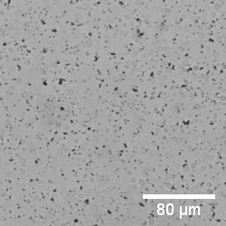

Experiment of BIT part: Aggregation of Beads with linker
Object
First, we confirmed whether the nonlinear α strand amplification is done by PEN DNA tool box and drain α system by measuring the intensity if fluorescent marker of α strand.
Method
We prepared 8 samples with following condition. the samples were incubated at 40 degrees for 2 hours in a thermal cycler. Then we traced the fluorescent level of α.
| α 0 nM | α 100 pM | α 1 nM | α 10 nM | |
| drain α 20 nM | sample 1 | sample 2 | sample 3 | sample 4 |
| drain α 0 nM | sample 5 | sample 6 | sample 7 | sample 8 |
Result and Discussion
Fig.1 Fluorescence intensity of samples which differ the initial concentration of α strands (10nM,1nM,100pM,0nM) in no drain α condition.
In the condition without drain α, it was observed that the fluorescence intensity got higher and reached to plateau in all samples, which started α strand amplification faster in the order of α 10nM, 1nM, 100pM, and 0nM.
Fig.2 Fluorescence intensity of samples which differ the initial concentration of α strands (10nM,1nM,100pM,0nM) in drain α 20nM condition.
The intensity of fluorescence increased and reached to plateau only in the condition of α 10nM after 2-hour incubation. On the other hand, the intensity of fluorescence in the other samples were not changed dramatically. Therefore, it is thought that PEN and drain α system can amplify strand α nonlinearly depending on the initial α strand concentrations.
Compared with the drain α 20 nM and 0nM conditions, it is showed that α nonlinear amplification system works with the existence of drain α.
Experiment of CLOT part 1: Confirm that linker aggregates the D1,D2 beads
Object
We aimed to check the linker can make D1 and D2 beads aggregated by using microscope.
Method
We prepared four different concentrations of linker solutions (10 µM, 1 µM, 0.1 µM, control), and added them to the solution which beads D1 and D2 were in. We incubated each solution at room temperature for 1 hour and observed them with a microscope.
Result and Discussion
Fig.1 Microscopic images of each solution after one-hour incubation. Scale bar= 80 µm.
The beads aggregated when we put the linker into D1 and D2 solutions at any linker-exist samples (0.1 µM, 1 µM, and 10 µM). In contrast, the aggregation was not observed in control condition. Therefore, the linker correctly functioned.
Experiment of CLOT part 2: Confirm conversion from α to linker and aggregation
Object
We aimed to confirm the α strand can amplify the linker, which occur beads aggregation by observing the fluorescence of DNA binding.
Method
We designed 3 types of α to Linker (be-0, be-2, be-4), and added them to the solution which DNA strand amplification System, beads D1 and D2 were in. We put them in the lanes of chamber and incubated each solution at 45 degree for 6 hours, tracing the bonding of DNA with a fluorescence microscope.
Result and Discussion
| be-0 | be-2 | be-4 |
.gif) |
.gif) |
.gif) |
Fig.4 The movies of aggregation of beads. The observation time is from 0 to 6 hours. (left: be, middle: be-2, right: be-4)
The aggregation of beads were observed in all three samples . The aggregation time delayed when the length of α to linker was getting short (from be to be-4). It is suggested that each a to linker worked and produced linker, which is regulated by the affinity for α strand.
Experiment of BIT CLOT part: Whether we can achieve nonlinear beads aggregation
Object
We aimed to observe the non-linear beads aggregation depending on the initial concentration of α applying α strand non-linear amplification system (BIT) and beads aggregation (CLOT). We checked the aggregation using microscope.
Method
We prepared 9 samples and put different concentration of α (0,100,200,300,400,500,600,700,800 pM) in α strand amplification and beads aggregation system solution. Then we put them in the lanes of chamber. We incubated each solution at 45 degrees, then traced them with a microscope for 6 hours.
Result and Discussion
 |
.gif) |
.gif) |
.gif) |
.gif) |
.gif) |
.gif) |
.gif) |
.gif) |
Fig.5 The movies of aggregation of beads. The observation time is from 0 to 6 hours. (upper row: 0pM, 100pM, 200pM. middel row: 300pM, 400pM, 500pM. bottom row: 600pM, 700pM, 800pM.)
In the condition of drain α 20nM, the threshold of α is between 700pM and 600pM.The degree of aggregation is almost the same when the concentration of α is lower than 600pM and when higher than 700pM, so it can be said that we can achieve non-linear aggregation system.